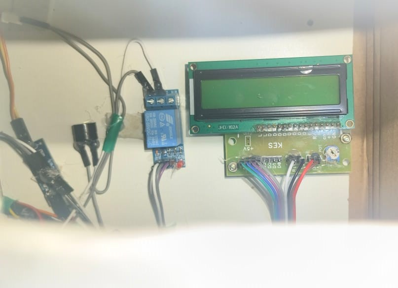

About Solar Tracker
An intelligent monitoring automatic air conditioner is a smart system that uses sensors and microcontrollers to monitor and control the air conditioner's operation in real-time. It adjusts the temperature, humidity, and fan speed based on the room's conditions, optimizing energy consumption and providing optimal comfort. The system can be controlled remotely using a smartphone app or web interface, allowing users to adjust settings and monitor the air conditioner's performance from anywhere.
